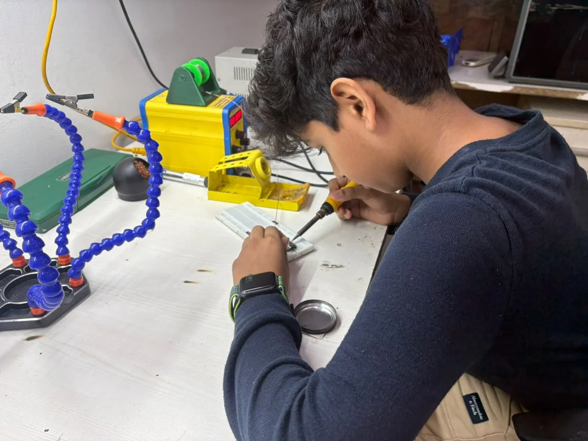

Young athletes
For people who love sport, play and being outside.
An idea for being more aware outdoors, inspired by a moment close to home.
Read the story
ARMAAN JAIN / FOUNDER & INNOVATOR01—03While training outside in intense summer heat, Armaan’s older brother fainted. Seeing that moment changed the way Armaan thought about a day in the sun.
He began asking a simple question: what if people had a better way to notice changing conditions? That question became a starting point for Project AURA.
AURA is an exploration, not a promise that an incident can be predicted or prevented. Shade, water, rest and appropriate help still matter.
Explore the wider context“Because nobody should have to choose between enjoying the outdoors and staying safe.”
The pitch imagines a future where useful prompts can be easier to understand for people who spend time outdoors.
For people who love sport, play and being outside.
For people looking for more context in their daily routines.
For those interested in more personalised UV awareness.
These are intended audiences in the project vision, not a claim that the prototype is safe or effective for any group.
Armaan’s pitch also imagines a more accessible future for wearable awareness.
US dollars, as stated in the project pitch.
US dollars, an aspiration for a developed product.
These figures are estimates and a future goal, not a current sale price or offer. The prototype is still being developed.
Armaan Jain is the founder and innovator behind AURA and SUPERCHARGED, Team 2875, from The British School, New Delhi.
The project is part of a journey into robotics, hands-on problem-solving and the Fibonacci International Robot Olympiad. Inspired by UN Sustainable Development Goal 3: Good Health and Well-Being.
Independent student project; no UN endorsement is implied.